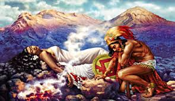
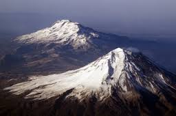

La Historia entre el popocatepetl y erl Iztaccíhuatl
Hace tiempo, cuando los aztecas dominaban el Valle de México, los otros pueblos debían obedecerlos y rendirles tributo, pese a su descontento pero un día, cansado de la opresión, un cacique de Tlaxcala decidió pelear por la libertad de su pueblo y empezó una terrible guerra entre aztecas y tlaxcaltecas.
La bella princesa Iztaccíhuatl, hija del cacique de Tlaxcala, se había enamorado del joven Popocatépetl, uno de los principales guerreros de este pueblo. Ambos se profesaban un amor inmenso, por lo que antes de ir a la guerra, el joven pidió al padre de la princesa la mano de ella si regresaba victorioso. El cacique de Tlaxcala aceptó el trato, prometiendo recibirlo con el festín del triunfo y el lecho de su amor.
El valiente guerrero se preparó con hombres y armas, partiendo a la guerra después de escuchar la promesa de que la princesa lo esperaría para casarse con él a su regreso. Al poco tiempo, un rival de Popocatépetl inventó que éste había muerto en combate. Al enterarse, la princesa Iztaccíhuatl lloró amargamente la muerte de su amado y luego murió de tristeza.
Popocatépetl venció en todos los combates y regresó triunfante a su pueblo, pero al llegar, recibió la terrible noticia de que la hija del cacique había muerto. De nada le servían la riqueza y poderío ganados si no tenía su amor.
Entonces, para honrarla y a fin de que permaneciera en la memoria de los pueblos, Popocatépetl mandó que 20,000 esclavos construyeran una gran tumba ante el Sol, amontonando diez cerros para formar una gigantesca montaña.

Desconsolado, tomó el cadáver de su princesa y lo cargó hasta depositarlo recostado en su cima, que tomó la forma de una mujer dormida. El joven le dio un beso póstumo, tomó una antorcha humeante y se arrodilló en otra montaña frente a su amada, velando su sueño eterno. La nieve cubrió sus cuerpos y los dos se convirtieron, lenta e irremediablemente, en volcanes.
Desde entonces permanecen juntos y silenciosos Iztaccíhuatl y Popocatépetl, quien a veces se acuerda del amor y de su amada; entonces su corazón, que guarda el fuego de la pasión eterna, tiembla y su antorcha echa un humo.
Durante muchos años y hasta poco antes de la Conquista, las doncellas muertas por amores desdichados eran sepultadas en las faldas del Iztaccíhuatl. En cuanto al cobarde tlaxcalteca que por celos mintió a Iztaccíhuatl sobre la muerte de Popocatépetl, desencadenando esta tragedia, fue a morir desorientado muy cerca de su tierra, también se convirtió en una montaña, el Pico de Orizaba y se cubrió de nieve. Le pusieron por nombre Citlaltépetl, o “Cerro de la estrella” y desde allá lejos vigila el sueño eterno de los dos amantes a quienes nunca, jamás podrá separar.
